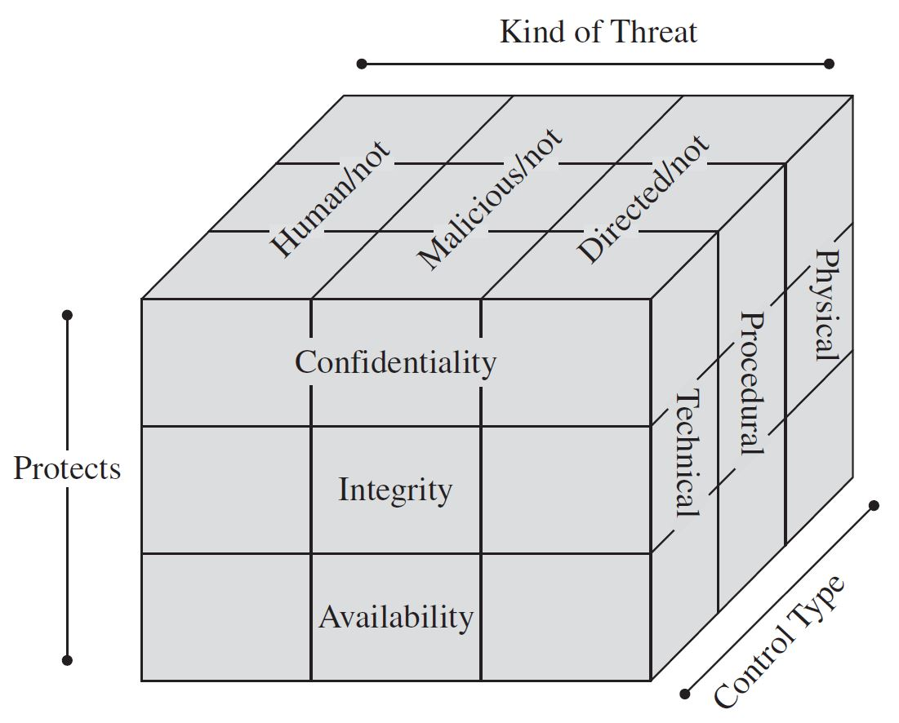

Control Methods
Controls are divided into 3 types:
- Physical Controls, which are tangible objects that can be used for protection, e.g., doors, walls, locks, etc.
- Administrative Controls that prescribe how a company behaves in each situation, e.g., policies and laws.
- Technical Controls using hardware and software for control implementation, e.g., passwords and encryption.

A control per each threat type and each CIA principle. "Figure 1-13: Types of Countermeasures" (page 31), Nayak, U., & Rao, U. H. (2014). The InfoSec handbook: An introduction to information security (1st ed.). APRESS.
 These notes by Miriam Briskman are licensed under CC BY-NC 4.0 and based on sources.
These notes by Miriam Briskman are licensed under CC BY-NC 4.0 and based on sources.